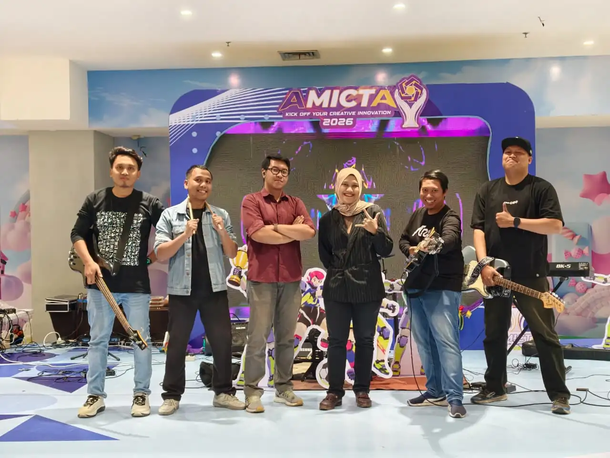
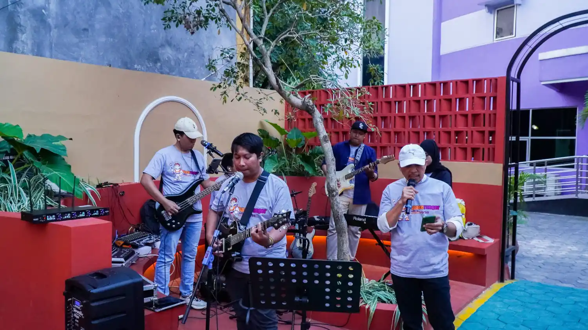
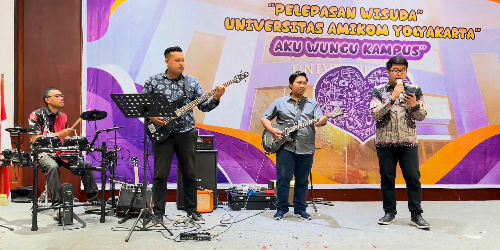
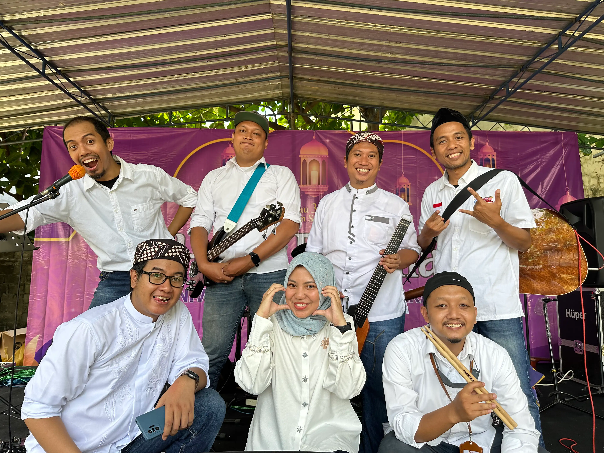
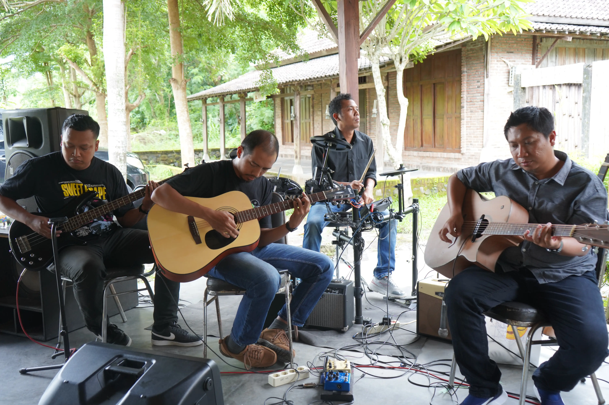

Pop-rock band · Yogyakarta, Indonesia · Since 2022
150Onefifty
You run the event. We wake up the room.
Kamu urus acaranya, kami hidupkan suasananya.
Onefifty is a Yogyakarta pop-rock band built on years of stage experience, with members who have played in bands since their youth. Off stage, they are academicians at Universitas AMIKOM Yogyakarta, The Creative Economy Park.
Yogyakarta is the city of students, and its book cafés are full of people who come to slow down. Before we write a single note, we want to hear their stories: what they escape from, and what they find between the pages. Those stories will become Onefifty's first original songs.
Do you read at a book café? Tell us why. Send a message to @onefifty.band.
Every Onefifty performance since 2022, newest first. Open a show to see its setlist.
Welcome Party 2026
Universitas AMIKOM Yogyakarta, Sleman
Songs played · 2 songs
Gemilang
Everything U Are
Event photo
AMICTA Celebration
Ambarrukmo Plaza, Sleman
Songs played · 6 songs
Jika Itu yang Terbaik
Everything U Are
Bagai Bintang di Surga
Hidup Untukmu Mati Tanpamu
Pergilah Kasih
Wherever You Are
Event photo

Opening of Creative Space AMIKOM
Creative Space, Universitas AMIKOM Yogyakarta, Sleman
Planned setlist · 9 songs
Everything U Are
Hidup Untukmu Mati Tanpamu
Wherever You Are
Chaosmyth
The Beginning
Jika Itu yang Terbaik
Anugerah Terindah
April
Tentang Aku
Event photo

PPM 2024, new student orientation
Universitas AMIKOM Yogyakarta, Sleman
Songs played · 3 songs
Mengingatmu (Battle of Surabaya OST)
Penjaga Hati
Sialan
Event photo
Entrepreneur Day 87
Universitas AMIKOM Yogyakarta, Sleman
Planned setlist · 10 songs
Mesin Waktu
Air dan Api × Topeng
Kangen
Bukan Pujangga
Anugerah
Hidupku Kan Damaikan Hatimu
Hidup Untukmu Mati Tanpamu
Cinta Terbaik
Jangan Menyerah
April
Event photo
Graduate farewell (Pelepasan)
Tanjungsari Ballroom, Merapi Merbabu Hotel Seturan, Sleman
Songs played · 11 songs
Anugerah Terindah yang Pernah Kumiliki
Jangan Menyerah
Topeng × Air dan Api
Aku Bukan Jodohnya
Nemen
Kolam Ikan
Mengingatmu
Cinta Terbaik
Jogja Istimewa
April
Kisah Klasik
Event photo

Syawalan, first day back after Eid
Universitas AMIKOM Yogyakarta, Sleman
Planned setlist · 13 songs
Assalamualaikum
Tombo Ati
Mesin Waktu
Air dan Api × Topeng
Kangen
Bukan Pujangga
Anugerah
Hidupku Kan Damaikan Hatimu
Hidup Untukmu Mati Tanpamu
Cinta Terbaik
Tunggu Aku di Jakarta
JAP
Selamat Lebaran
Event photo

Kenduri Informatika
Cengkir Heritage, Yogyakarta
Planned setlist · 18 songs
Cinta Terbaik
Menghapus Jejakmu
Tak Segampang Itu
Demi Waktu
Komang
Jiwa yang Bersedih
Mesin Waktu
Waktu yang Salah
Asal Kau Bahagia
Cinta Luar Biasa
April
Jika Itu yang Terbaik
Cinta Ini Membunuhku
Saat Kau Tak Disini
The Reason
Puisi
Dengar Bisikku
Nemen
Event photo

Rembug SI
Rumah Mbelik, Yogyakarta
Setlist not recorded
Event photo
Welcome Party Mahasiswa Baru 2022
Unviersitas Amikom Yogyakarta
Songs played · 3 songs
The Beginning (One Ok Rock)
Surat Cinta untuk Starla (Virgoun)
Terlatih Patah Hati (The Rain)
Event photo
Kenduri Informatika
Moelih Ndeso Resto, Yogyakarta
Setlist not recorded
Event photo
Why Onefifty
For the band it stands for growth. As the members grow in expertise, both as academicians and as musicians, they want that growth to bring a positive and significant impact to life.
Members
Every member played in bands when they were young. The lineup rotates from event to event, so each show gets the players and instruments it needs.
01
Arif Akbarul Huda
Music producer
ML/AI Engineer
02
Arifiyanto Hadinegoro
Guitar, bass, drums
Soft Computing
03
Agit Amrullah
Bass or guitar
Computer Vision
04
Muhammad Tofa Nurcholis
Vocals
Game Development
05
Anggit Ferdita Nugraha
Drums
Programmer
06
Rifda Faticha
Vocals
UI/UX Researcher
07
Fajar Sigit Purnomo
Bass
Computer Network Engineer
08
Nadea Cipta Laksmita
Keyboard, music producer
AI Music
09
Muhammad Najih Fasya
Vocals
Urban & Regional Planning Researcher
Who played when
The lineup rotates from show to show. Each row is a member, each column a show, from the first stage in 2022 to today. The line marks a member's run with the band. Faded columns are shows whose lineup was not recorded; guest performers are not shown.
Which Onefifty member played which role at each show
Book Onefifty
You run the event. We wake up the room.
We play orientations, graduations, campus festivals, company gatherings and public stages. We read the crowd before we pick the songs: for PPM 2026 we polled 50 new students on Instagram and built the set around their answers.
Full band or acousticDrums, bass, guitars, keys and two vocalists, or a stripped-down set for smaller rooms.
Sets from 2 songs to 3 sessionsFrom a short opener to a full morning program.
Our own monitor rigWe bring our mixer and in-ear monitors, so your sound crew has less to set up.
Onefifty is a pop-rock band from Yogyakarta, Indonesia, formed in 2022 by academicians of Universitas AMIKOM Yogyakarta, The Creative Economy Park. The band plays campus events, graduations, orientations and public stages.
Why is the band called Onefifty?
The name comes from Asisten Ahli 150, the first academic rank (Jabatan Fungsional Akademik) of an Indonesian lecturer and the gate to a professional academic career. It stands for growth: as the members grow as academicians and as musicians, they want to bring a positive and significant impact to life.
Who are the members of Onefifty?
Arif Akbarul Huda (ML/AI Engineer, music producer); Arifiyanto Hadinegoro (Soft Computing, guitar, bass, drums); Agit Amrullah (Computer Vision, bass or guitar); Muhammad Tofa Nurcholis (Game Development, vocals); Anggit Ferdita Nugraha (Programmer, drums); Rifda Faticha (UI/UX Researcher, vocals); Fajar Sigit Purnomo (Computer Network Engineer, bass); Nadea Cipta Laksmita (AI Music, keyboard, music producer); Muhammad Najih Fasya (Urban & Regional Planning Researcher, vocals). The lineup rotates between events.
What kind of events does Onefifty play?
Campus events, new student orientations (PPM), graduate farewells, entrepreneurship days, faculty celebrations, and public stages such as Ambarrukmo Plaza. The band has played 12 shows since 2022.
What music does Onefifty play?
Pop-rock arrangements of Indonesian and international songs that audiences sing along to, from Sheila on 7, Noah, Ungu and Fiersa Besari to Hindia, Perunggu and ONE OK ROCK, plus the band's own rock arrangement of Mengingatmu from the Battle of Surabaya soundtrack.
How do I book Onefifty?
Send a message to Onefifty on Instagram at @onefifty.band with your event date, venue and audience.